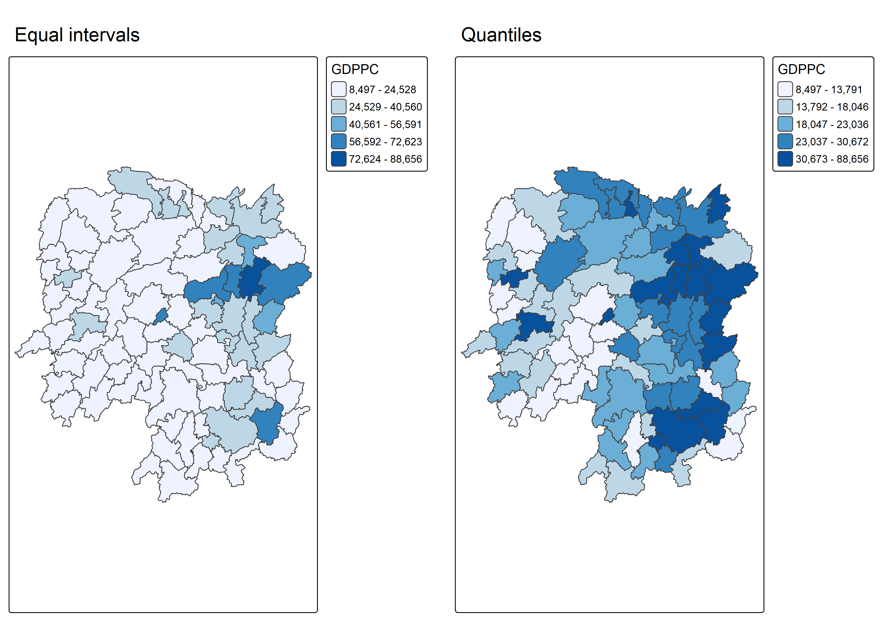
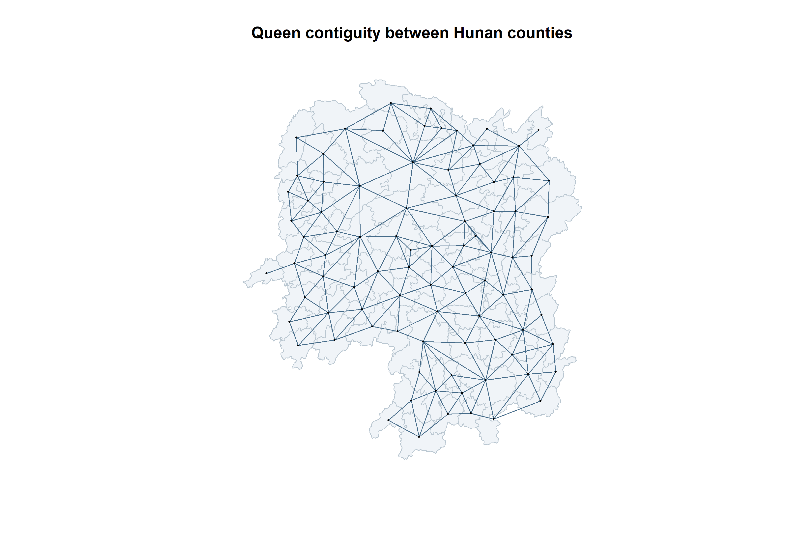
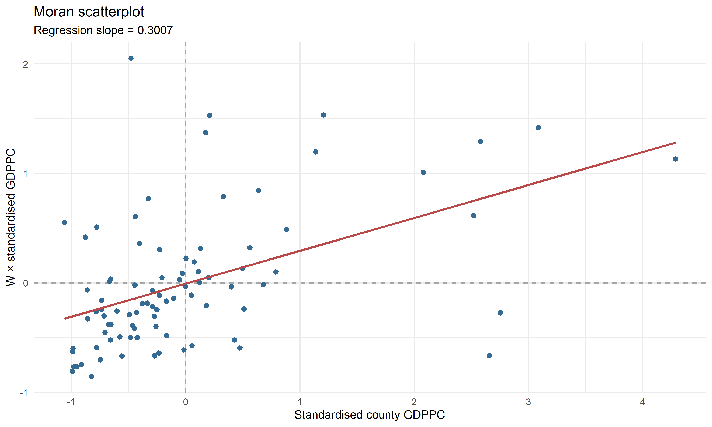
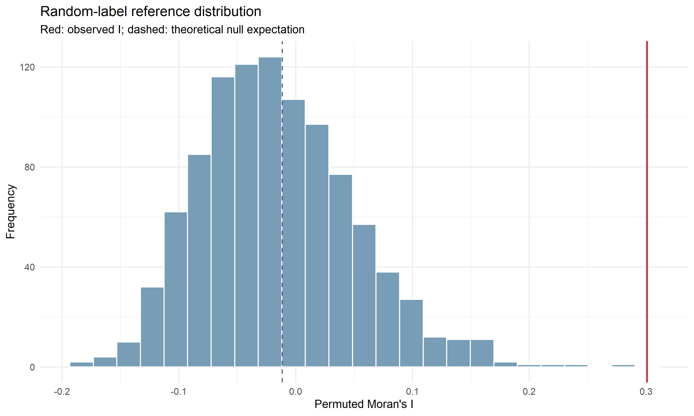
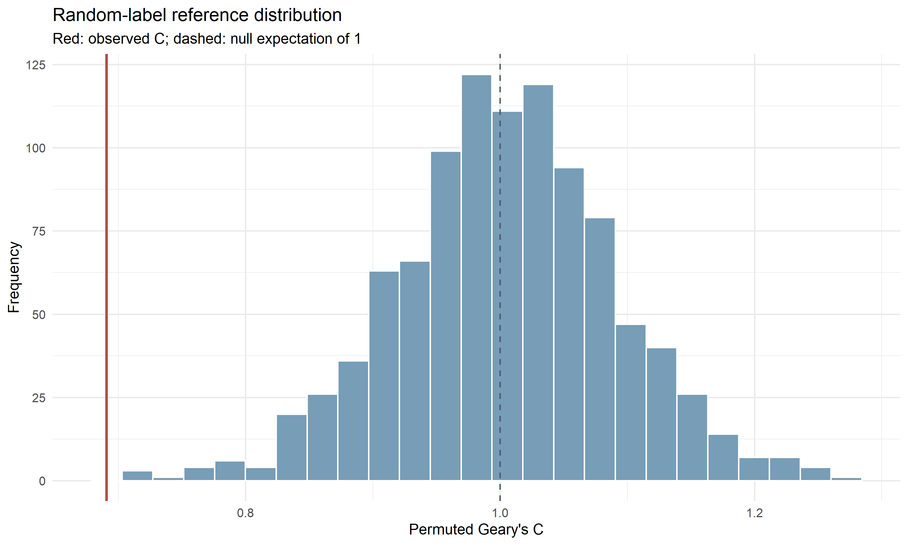
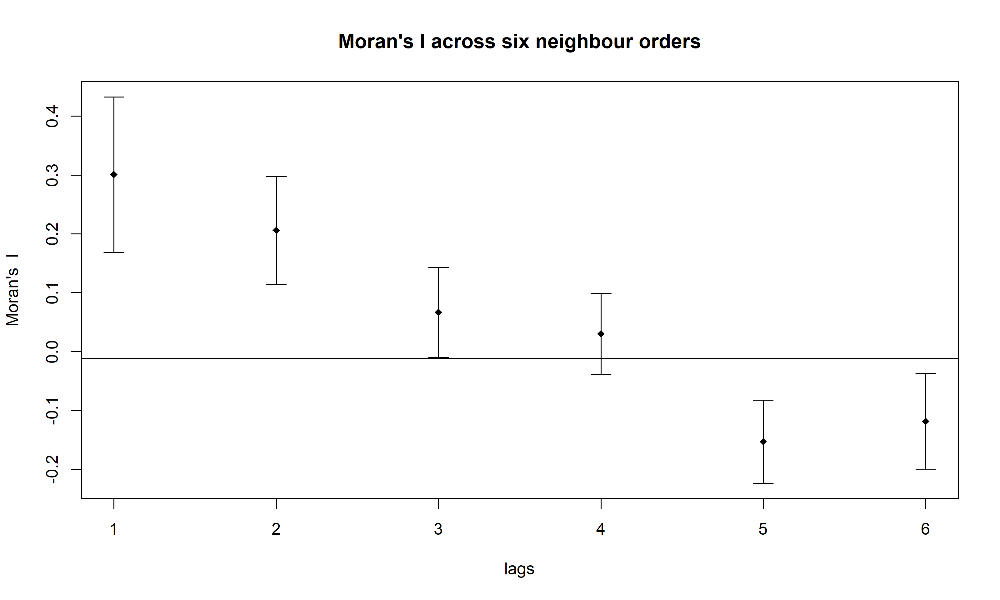
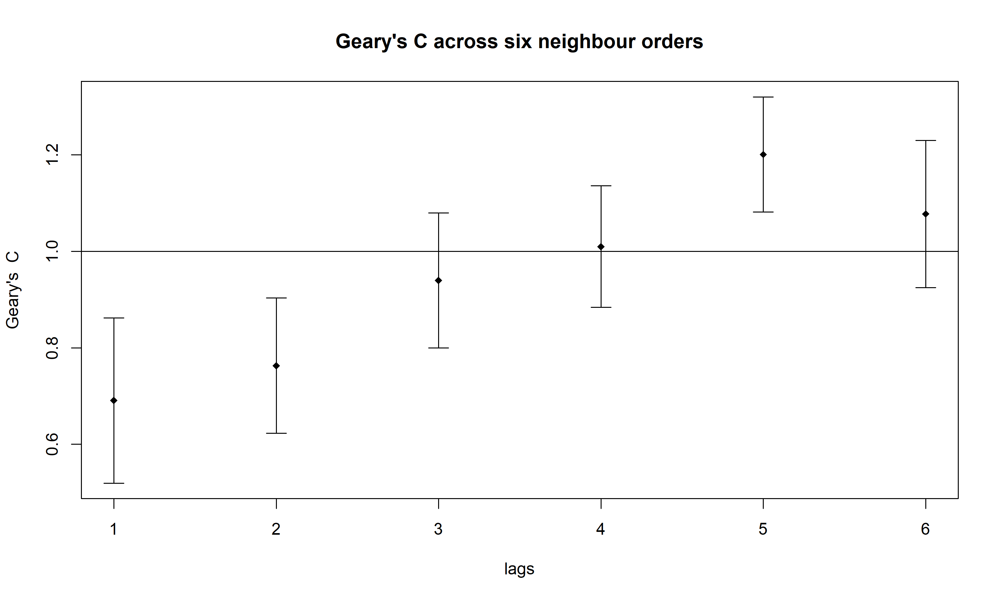

library(sf)
library(spdep)
library(tmap)
library(dplyr)
library(readr)
library(ggplot2)
library(knitr)
tmap_mode("plot")
options(scipen = 5)Hands-on Exercise 5A
Global spatial autocorrelation of Hunan GDP per capita
1. Purpose and workflow
Does GDP per capita show a province-wide spatial pattern among Hunan’s counties in 2012? I follow Chapter 9: Global Measures of Spatial Autocorrelation to compare Moran’s I and Geary’s C, check their significance through permutation, and examine how association changes across neighbour orders.
This page builds on Hands-on Exercise 4, which introduced spatial weights. Exercise 5B then locates clusters and spatial outliers. A province-wide statistic establishes evidence of association; local methods are needed to identify where that association occurs.
2. Import, join and validate the inputs
The county shapefile and Hunan_2012.csv are stored in handson4/data. They match the shapefile and 2012 CSV supplied at C:/zhenhuaArhci/my_Project/data (SHA-256 checked on 3 October 2026). I reuse these tracked inputs so the exercise also runs from a GitHub checkout. The data provenance is documented in the existing data notes.
Joining explicitly on County prevents unintended matching on other fields. The checks require unique county keys, complete matches, valid geometry and finite GDPPC. The original geographic CRS is retained for this chapter’s contiguity analysis; drawing the neighbour graph uses a projected copy.
hunan <- st_read("handson4/data/geospatial", layer = "Hunan", quiet = TRUE)
hunan2012 <- read_csv("handson4/data/aspatial/Hunan_2012.csv",
show_col_types = FALSE)
stopifnot(!anyDuplicated(hunan$County), !anyDuplicated(hunan2012$County),
setequal(hunan$County, hunan2012$County))
hunan <- left_join(hunan, hunan2012, by = "County") |>
select(NAME_2, ID_3, NAME_3, County, GDPPC)
stopifnot(nrow(hunan) == 88L, !anyNA(hunan$GDPPC),
all(is.finite(hunan$GDPPC)), all(st_is_valid(hunan)),
isTRUE(st_is_longlat(hunan)))
kable(head(st_drop_geometry(hunan)), caption = "Joined Hunan county data, 2012")| NAME_2 | ID_3 | NAME_3 | County | GDPPC |
|---|---|---|---|---|
| Changde | 21098 | Anxiang | Anxiang | 23667 |
| Changde | 21100 | Hanshou | Hanshou | 20981 |
| Changde | 21101 | Jinshi | Jinshi | 34592 |
| Changde | 21102 | Li | Li | 24473 |
| Changde | 21103 | Linli | Linli | 25554 |
| Changde | 21104 | Shimen | Shimen | 27137 |
st_crs(hunan)Coordinate Reference System:
User input: WGS 84
wkt:
GEOGCRS["WGS 84",
DATUM["World Geodetic System 1984",
ELLIPSOID["WGS 84",6378137,298.257223563,
LENGTHUNIT["metre",1]]],
PRIMEM["Greenwich",0,
ANGLEUNIT["degree",0.0174532925199433]],
CS[ellipsoidal,2],
AXIS["latitude",north,
ORDER[1],
ANGLEUNIT["degree",0.0174532925199433]],
AXIS["longitude",east,
ORDER[2],
ANGLEUNIT["degree",0.0174532925199433]],
ID["EPSG",4326]]gdppc_summary <- tibble(Counties = nrow(hunan), Mean = mean(hunan$GDPPC),
Median = median(hunan$GDPPC), SD = sd(hunan$GDPPC),
Minimum = min(hunan$GDPPC), Maximum = max(hunan$GDPPC))
kable(gdppc_summary, digits = 2)| Counties | Mean | Median | SD | Minimum | Maximum |
|---|---|---|---|---|---|
| 88 | 24404.81 | 20433 | 14994.26 | 8497 | 88656 |
GDPPC varies from 8497 to 88656, with a county mean of 24404.81. This mean treats every county equally and is not a population-weighted provincial estimate.
3. Visualise the development indicator
equal_map <- tm_shape(hunan) +
tm_polygons(fill = "GDPPC",
fill.scale = tm_scale_intervals(style = "equal", n = 5,
values = "brewer.blues"),
fill.legend = tm_legend(title = "GDPPC", position = tm_pos_out())) +
tm_title("Equal intervals")
quantile_map <- tm_shape(hunan) +
tm_polygons(fill = "GDPPC",
fill.scale = tm_scale_intervals(style = "quantile", n = 5,
values = "brewer.blues"),
fill.legend = tm_legend(title = "GDPPC", position = tm_pos_out())) +
tm_title("Quantiles")
tmap_arrange(equal_map, quantile_map, ncol = 2)
Equal intervals retain a common numerical width, while quantiles place approximately the same number of counties in each class. Their different appearance is a classification effect. Neither map alone tests spatial association, and a quantile class should not be read as an equally spaced income band.
4. Define Queen neighbours and row-standardised weights
Queen contiguity links counties that share an edge or vertex. style = "W" assigns each neighbour the reciprocal of the county’s neighbour count, so each nonempty row sums to one. Self-neighbours are excluded. County order must remain aligned with the weights throughout the analysis.
wm_q <- poly2nb(hunan, queen = TRUE, row.names = hunan$County)
summary(wm_q)Neighbour list object:
Number of regions: 88
Number of nonzero links: 448
Percentage nonzero weights: 5.785124
Average number of links: 5.090909
Link number distribution:
1 2 3 4 5 6 7 8 9 11
2 2 12 16 24 14 11 4 2 1
2 least connected regions:
Xinhuang Linxiang with 1 link
1 most connected region:
Taoyuan with 11 linksrswm_q <- nb2listw(wm_q, style = "W", zero.policy = TRUE)
rswm_qCharacteristics of weights list object:
Neighbour list object:
Number of regions: 88
Number of nonzero links: 448
Percentage nonzero weights: 5.785124
Average number of links: 5.090909
Weights style: W
Weights constants summary:
n nn S0 S1 S2
W 88 7744 88 37.86334 365.9147stopifnot(all(card(wm_q) > 0L),
all(abs(vapply(rswm_q$weights, sum, numeric(1)) - 1) < 1e-10),
identical(attr(wm_q, "region.id"), hunan$County))
coords <- st_coordinates(st_centroid(st_transform(hunan, 32650)))
plot(st_geometry(st_transform(hunan, 32650)), col = "#f0f4f8",
border = "#bac7d1", main = "Queen contiguity between Hunan counties")
plot(wm_q, coords, add = TRUE, col = "#456b89", pch = 20, cex = 0.4)
There are 88 counties and 448 directed links, with an average of 5.09 neighbours. The neighbour count ranges from 1 to 11; no county is isolated. Edge counties have fewer neighbours, so their spatial averages describe a smaller surrounding set.
5. Moran’s I: global similarity
Analytical and permutation tests
The null is that GDPPC labels are spatially exchangeable over the fixed county neighbourhood graph. The one-sided alternative seeks positive association. A positive I indicates that similar GDPPC values tend to be neighbours; it does not establish the cause of this arrangement.
moran_result <- moran.test(hunan$GDPPC, listw = rswm_q,
alternative = "greater", zero.policy = TRUE, na.action = na.fail)
moran_result
Moran I test under randomisation
data: hunan$GDPPC
weights: rswm_q
Moran I statistic standard deviate = 4.7351, p-value = 0.000001095
alternative hypothesis: greater
sample estimates:
Moran I statistic Expectation Variance
0.300749970 -0.011494253 0.004348351 set.seed(1234)
moran_perm <- moran.mc(hunan$GDPPC, listw = rswm_q, nsim = 999,
alternative = "greater", zero.policy = TRUE, na.action = na.fail)
moran_perm
Monte-Carlo simulation of Moran I
data: hunan$GDPPC
weights: rswm_q
number of simulations + 1: 1000
statistic = 0.30075, observed rank = 1000, p-value = 0.001
alternative hypothesis: greaterThe observed I is 0.30075, against a null expectation of -0.01149. The analytical p-value is 0.00000109 and the 999-permutation p-value is 0.001. At the 5% level, the permutation test supports positive global spatial association.
Moran scatterplot
z_gdppc <- as.numeric(scale(hunan$GDPPC))
moran_scatter <- tibble(County = hunan$County, z = z_gdppc,
lag_z = lag.listw(rswm_q, z_gdppc))
scatter_fit <- lm(lag_z ~ z, data = moran_scatter)
stopifnot(abs(unname(coef(scatter_fit)[2]) -
unname(moran_result$estimate[1])) < 1e-10)
ggplot(moran_scatter, aes(z, lag_z)) +
geom_hline(yintercept = 0, colour = "grey65", linetype = 2) +
geom_vline(xintercept = 0, colour = "grey65", linetype = 2) +
geom_point(colour = "#356a92", size = 2) +
geom_smooth(method = "lm", se = FALSE, colour = "#b94948") +
labs(x = "Standardised county GDPPC", y = "W × standardised GDPPC",
title = "Moran scatterplot",
subtitle = paste("Regression slope =", round(coef(scatter_fit)[2], 4))) +
theme_minimal(base_size = 12)
The regression slope equals Moran’s I for these row-standardised weights. Points in the upper-right and lower-left quadrants contribute to positive association; opposite quadrants suggest spatial contrasts. Quadrants alone do not establish a statistically significant local cluster.
Monte Carlo distribution and the ggplot2 challenge
moran_sim <- tibble(statistic = moran_perm$res[seq_len(999)])
kable(tibble(Mean = mean(moran_sim$statistic),
Variance = var(moran_sim$statistic), Minimum = min(moran_sim$statistic),
Maximum = max(moran_sim$statistic)), digits = 6,
caption = "Moran's I: 999 simulated values only")| Mean | Variance | Minimum | Maximum |
|---|---|---|---|
| -0.015046 | 0.004372 | -0.183385 | 0.275927 |
Permutation reference distribution, excluding the observed statistic from the histogram.
ggplot(moran_sim, aes(statistic)) +
geom_histogram(bins = 25, fill = "#779db7", colour = "white") +
geom_vline(xintercept = -1 / (nrow(hunan) - 1), linetype = 2,
colour = "#4d5965") +
geom_vline(xintercept = unname(moran_perm$statistic), colour = "#b94948",
linewidth = 1) +
labs(x = "Permuted Moran's I", y = "Frequency",
title = "Random-label reference distribution",
subtitle = "Red: observed I; dashed: theoretical null expectation") +
theme_minimal(base_size = 12)
The observed statistic is compared with a distribution generated by reassigning GDPPC values to counties while retaining the neighbourhood structure. The dashed reference is the exact null expectation, −1/(n−1), rather than zero. The histogram and summary use only the 999 simulated statistics; the final observed value in the simulation object is excluded.
6. Geary’s C: differences between neighbours
Analytical and permutation tests
Geary’s C focuses on squared differences between neighbouring values. Its null expectation is one: C below one suggests positive association, while C above one suggests negative association. In spdep, alternative = "greater" tests the positive-association direction through the deviate (expectation minus observed C), so this alternative seeks a C smaller than one.
geary_result <- geary.test(hunan$GDPPC, listw = rswm_q,
alternative = "greater", zero.policy = TRUE)
geary_result
Geary C test under randomisation
data: hunan$GDPPC
weights: rswm_q
Geary C statistic standard deviate = 3.6108, p-value = 0.0001526
alternative hypothesis: Expectation greater than statistic
sample estimates:
Geary C statistic Expectation Variance
0.6907223 1.0000000 0.0073364 set.seed(1234)
geary_perm <- geary.mc(hunan$GDPPC, listw = rswm_q, nsim = 999,
alternative = "greater", zero.policy = TRUE)
geary_perm
Monte-Carlo simulation of Geary C
data: hunan$GDPPC
weights: rswm_q
number of simulations + 1: 1000
statistic = 0.69072, observed rank = 1, p-value = 0.001
alternative hypothesis: greaterThe observed C is 0.69072. The analytical p-value is 0.000153 and the permutation p-value is 0.001. The permutation test also supports similarity between neighbouring counties.
Simulated values
geary_sim <- tibble(statistic = geary_perm$res[seq_len(999)])
kable(tibble(Mean = mean(geary_sim$statistic),
Variance = var(geary_sim$statistic), Minimum = min(geary_sim$statistic),
Maximum = max(geary_sim$statistic)), digits = 6,
caption = "Geary's C: 999 simulated values only")| Mean | Variance | Minimum | Maximum |
|---|---|---|---|
| 1.004402 | 0.007436 | 0.714189 | 1.272236 |
Geary’s C permutation distribution with its observed and null reference lines.
ggplot(geary_sim, aes(statistic)) +
geom_histogram(bins = 25, fill = "#779db7", colour = "white") +
geom_vline(xintercept = 1, linetype = 2, colour = "#4d5965") +
geom_vline(xintercept = unname(geary_perm$statistic), colour = "#b94948",
linewidth = 1) +
labs(x = "Permuted Geary's C", y = "Frequency",
title = "Random-label reference distribution",
subtitle = "Red: observed C; dashed: null expectation of 1") +
theme_minimal(base_size = 12)
The reference distribution is centred close to one. Comparing both statistics is useful because Moran’s I measures covariance, while Geary’s C gives greater emphasis to neighbour-to-neighbour differences. Agreement strengthens the description of the pattern; it does not remove dependence on the chosen weights.
7. Spatial correlograms
These lags are graph orders, not kilometre bands. Order two links counties reached in two steps, excluding counties already linked at a shorter order; subsequent orders extend this graph distance. Each estimate describes a different neighbourhood relation.
Moran’s I over six orders
MI_corr <- sp.correlogram(wm_q, hunan$GDPPC, order = 6,
method = "I", style = "W", zero.policy = TRUE)
plot(MI_corr, main = "Moran's I across six neighbour orders")
print(MI_corr)Spatial correlogram for hunan$GDPPC
method: Moran's I
estimate expectation variance standard deviate Pr(I) two sided
1 (88) 0.3007500 -0.0114943 0.0043484 4.7351 0.000002189 ***
2 (88) 0.2060084 -0.0114943 0.0020962 4.7505 0.000002029 ***
3 (88) 0.0668273 -0.0114943 0.0014602 2.0496 0.040400 *
4 (88) 0.0299470 -0.0114943 0.0011717 1.2107 0.226015
5 (88) -0.1530471 -0.0114943 0.0012440 -4.0134 0.000059840 ***
6 (88) -0.1187070 -0.0114943 0.0016791 -2.6164 0.008886 **
---
Signif. codes: 0 '***' 0.001 '**' 0.01 '*' 0.05 '.' 0.1 ' ' 1Geary’s C over six orders
GC_corr <- sp.correlogram(wm_q, hunan$GDPPC, order = 6,
method = "C", style = "W", zero.policy = TRUE)
plot(GC_corr, main = "Geary's C across six neighbour orders")
print(GC_corr)Spatial correlogram for hunan$GDPPC
method: Geary's C
estimate expectation variance standard deviate Pr(I) two sided
1 (88) 0.6907223 1.0000000 0.0073364 -3.6108 0.0003052 ***
2 (88) 0.7630197 1.0000000 0.0049126 -3.3811 0.0007220 ***
3 (88) 0.9397299 1.0000000 0.0049005 -0.8610 0.3892612
4 (88) 1.0098462 1.0000000 0.0039631 0.1564 0.8757128
5 (88) 1.2008204 1.0000000 0.0035568 3.3673 0.0007592 ***
6 (88) 1.0773386 1.0000000 0.0058042 1.0151 0.3100407
---
Signif. codes: 0 '***' 0.001 '**' 0.01 '*' 0.05 '.' 0.1 ' ' 1The printed reports provide two-sided p-values, whereas the earlier global tests deliberately used one-sided positive-association alternatives. I also report Benjamini–Hochberg (BH) adjusted p-values within each set of six correlogram tests, to distinguish exploratory lag comparisons from a single test.
global_results <- tibble(Statistic = c("Moran's I", "Geary's C"),
Observed = c(unname(moran_result$estimate[1]), unname(geary_result$estimate[1])),
Null_expectation = c(unname(moran_result$estimate[2]), unname(geary_result$estimate[2])),
Analytical_p = c(moran_result$p.value, geary_result$p.value),
Permutation_p = c(moran_perm$p.value, geary_perm$p.value),
Permutations = 999L, Seed = 1234L)
correlogram_results <- bind_rows(
as_tibble(MI_corr$res, .name_repair = "minimal") |>
setNames(c("Estimate", "Expectation", "Variance")) |>
mutate(Statistic = "Moran's I", Order = row_number()),
as_tibble(GC_corr$res, .name_repair = "minimal") |>
setNames(c("Estimate", "Expectation", "Variance")) |>
mutate(Statistic = "Geary's C", Order = row_number())) |>
mutate(Z = (Estimate - Expectation) / sqrt(Variance),
P_two_sided = 2 * pnorm(abs(Z), lower.tail = FALSE)) |>
group_by(Statistic) |>
mutate(P_BH = p.adjust(P_two_sided, method = "BH")) |>
ungroup()
dir.create("handson4A/results", recursive = TRUE, showWarnings = FALSE)
write_csv(global_results, "handson4A/results/global-tests.csv")
write_csv(correlogram_results, "handson4A/results/correlograms.csv")
kable(global_results, digits = 6, caption = "Global autocorrelation results")| Statistic | Observed | Null_expectation | Analytical_p | Permutation_p | Permutations | Seed |
|---|---|---|---|---|---|---|
| Moran’s I | 0.300750 | -0.011494 | 0.000001 | 0.001 | 999 | 1234 |
| Geary’s C | 0.690722 | 1.000000 | 0.000153 | 0.001 | 999 | 1234 |
kable(correlogram_results, digits = 6,
caption = "Correlogram estimates and BH adjustment within each six-lag family")| Estimate | Expectation | Variance | Statistic | Order | Z | P_two_sided | P_BH |
|---|---|---|---|---|---|---|---|
| 0.300750 | -0.011494 | 0.004348 | Moran’s I | 1 | 4.735132 | 0.000002 | 0.000007 |
| 0.206008 | -0.011494 | 0.002096 | Moran’s I | 2 | 4.750547 | 0.000002 | 0.000007 |
| 0.066827 | -0.011494 | 0.001460 | Moran’s I | 3 | 2.049635 | 0.040400 | 0.048480 |
| 0.029947 | -0.011494 | 0.001172 | Moran’s I | 4 | 1.210688 | 0.226015 | 0.226015 |
| -0.153047 | -0.011494 | 0.001244 | Moran’s I | 5 | -4.013439 | 0.000060 | 0.000120 |
| -0.118707 | -0.011494 | 0.001679 | Moran’s I | 6 | -2.616422 | 0.008886 | 0.013328 |
| 0.690722 | 1.000000 | 0.007336 | Geary’s C | 1 | -3.610830 | 0.000305 | 0.001518 |
| 0.763020 | 1.000000 | 0.004913 | Geary’s C | 2 | -3.381081 | 0.000722 | 0.001518 |
| 0.939730 | 1.000000 | 0.004901 | Geary’s C | 3 | -0.860958 | 0.389261 | 0.467113 |
| 1.009846 | 1.000000 | 0.003963 | Geary’s C | 4 | 0.156406 | 0.875713 | 0.875713 |
| 1.200820 | 1.000000 | 0.003557 | Geary’s C | 5 | 3.367273 | 0.000759 | 0.001518 |
| 1.077339 | 1.000000 | 0.005804 | Geary’s C | 6 | 1.015137 | 0.310041 | 0.465061 |
For Moran’s I, the nominally significant orders are 1, 2, 3, 5, 6; after BH adjustment they are 1, 2, 3, 5, 6. Positive estimates at short orders and negative estimates at some longer orders describe similarity nearby and contrast across broader parts of the province. A nonsignificant order does not prove spatial independence.
8. Reflection and reproducibility
Global measures provide evidence about the arrangement of county GDPPC values, rather than a test of equal development or a causal explanation. Raw GDPPC contains unusually high values, and the result could change with a transformation, another indicator, or a different neighbourhood definition. The analysis refers to the 2012 snapshot and these 88 administrative units.
Next, Exercise 5B examines the locations of local clusters, outliers, hot spots and cold spots.
Open ISSS626-GAA.Rproj and run source("handson4A/R/analysis.R") from the project root. To regenerate the page with fresh computation, run quarto render handson4A/index.qmd. The script uses seed 1234 and 999 permutations for each global Monte Carlo test.
kable(tibble(Package = c("sf", "spdep", "tmap", "dplyr", "readr", "ggplot2"),
Version = vapply(c("sf", "spdep", "tmap", "dplyr", "readr", "ggplot2"),
function(p) as.character(packageVersion(p)), character(1))))| Package | Version |
|---|---|
| sf | 1.1.3 |
| spdep | 1.4.2 |
| tmap | 4.4.1 |
| dplyr | 1.2.1 |
| readr | 2.2.0 |
| ggplot2 | 4.0.3 |
R.version.string[1] "R version 4.5.3 (2026-03-11 ucrt)"